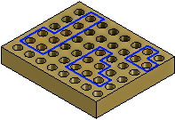
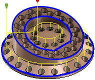

Limites d'esquisse
Les perçages situés à l'intérieur sont inclus
Utilisez cette option conjointement avec les options Sélectionner diamètre identique et Plage de diamètres afin d'inclure des éléments similaires dans les zones de confinement. Sélectionnez une limite d'arête ou d'esquisse pour inclure les emplacements de perçage. Utilisez plusieurs limites ou limites imbriquées de manière à inclure ou à exclure des groupes de perçages. La trajectoire d'outil figurera dans la limite sélectionnée, sauf si les limites sont imbriquées. Vous pouvez imbriquer plusieurs limites les unes dans les autres.
Dans les exemples ci-dessous, les limites sélectionnées sont affichées en bleu.
 |
|
Limites d'esquisse |
Les perçages situés à l'intérieur sont inclus |
 |
 |
Limites imbriquées |
Les zones à l'intérieur sont exclues |
 |
 |
Sélection de la zone du bord uniquement |
Exclusion de la zone du bord |